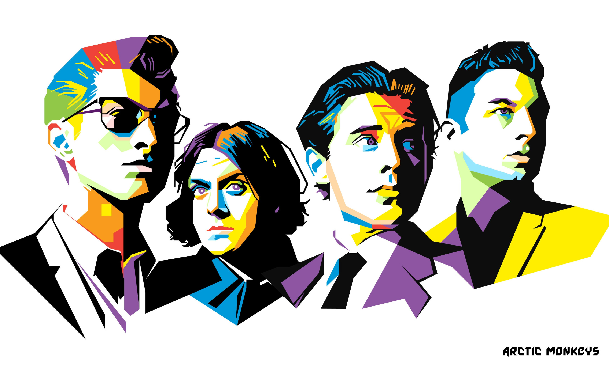
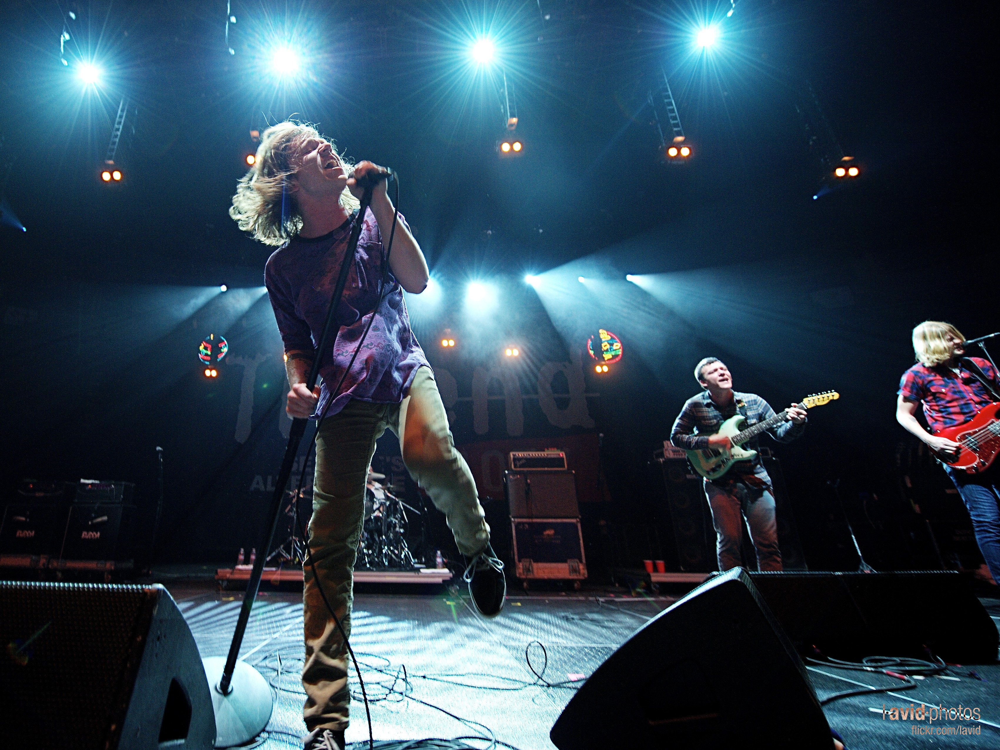
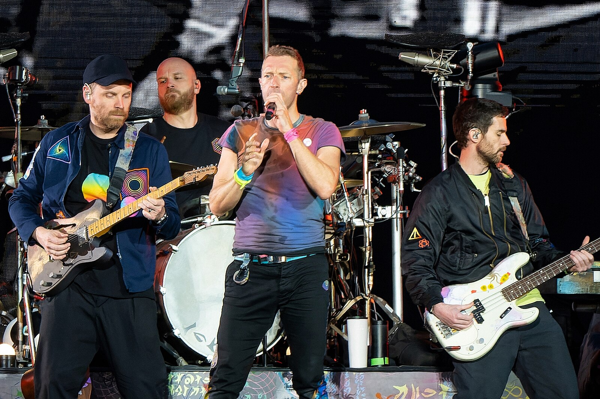
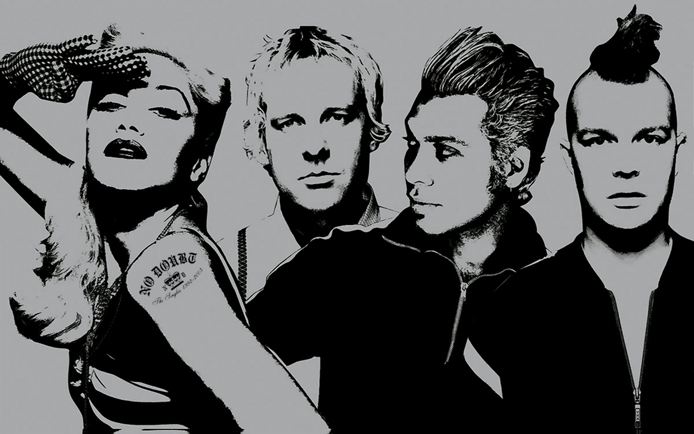

- Arctic Monkeys 
- Cage the Elephant 
- The Black Keys
- Coldplay 
- No Doubt 

Originating around the 1980s, alternative music is considered to be outside of the musical mainstream. Musicians' styles vary between rock, pop, grunge, electronic, and more. But they provide a diverse range of sounds, pushing the boundaries of conventional norms.